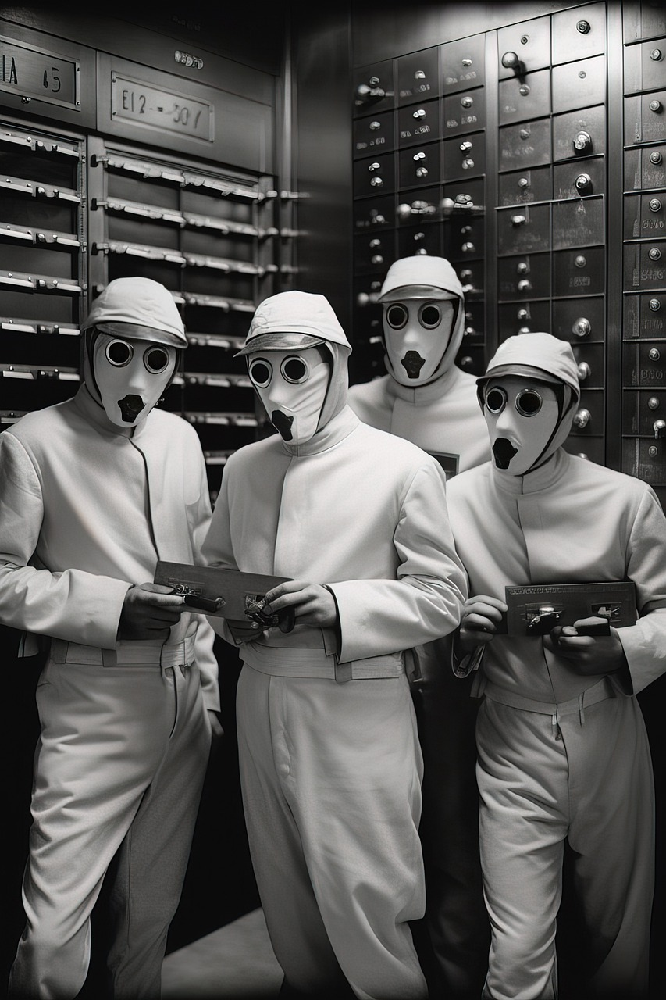

Regresar
Prevenir que se cancele un proyecto en 1990 sobre la investigación del meteoro:
Los que iban a asesinarlo lo atrapan y lo interrogan. Creando un desgarre del tiempo y la destrucción del mundo inmediata

2002: Secuestradores